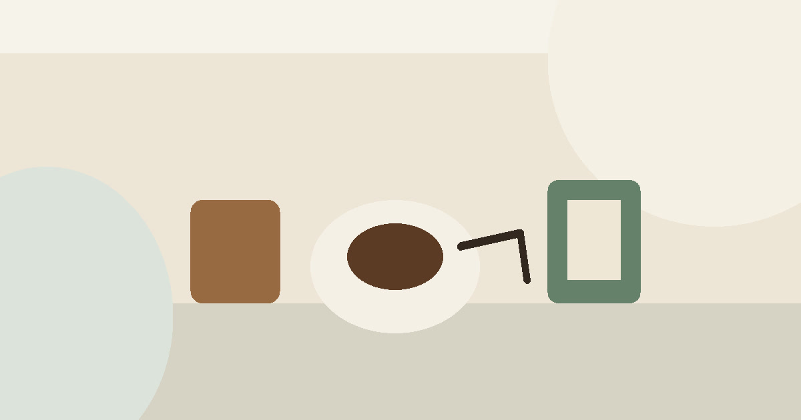

辦公室咖啡補給怎麼選：咖啡豆、濾掛、掛耳包與送禮盒
辦公室咖啡補給先看沖泡門檻、保存方式與共享情境，再決定咖啡豆、濾掛、掛耳包或禮盒。

辦公室咖啡不只是提神工具，它常常是會議前的停頓、下午三點的重整，也是送禮時不過度親密又不失禮的選項。真正好用的咖啡補給，不一定是最講究的器材，而是能符合辦公室沖泡條件、保存方式與共享頻率。本文用咖啡豆、濾掛、掛耳包與禮盒四個方向，整理出不容易浪費的採買順序。
先看辦公室有沒有沖泡條件
如果辦公室沒有磨豆機、手沖壺或穩定清洗空間，咖啡豆再好也可能變成擺設。濾掛與掛耳包的優勢，是讓每個人都能用低門檻完成一杯。
歐力咖啡、Xinto Coffee 與馬克老爹可以分別放在日常補給、風味辨識與禮盒情境裡比較；但本文不替任何風味排名背書。
本段的選物會把 歐力咖啡 Olly Coffee｜實體店面同步販售、Xinto Coffee 世界雙金咖啡烘豆廠 鑫圖咖啡 與其他相關品牌放在同一個生活問題裡看，而不是把品牌名稱排成購物清單。這樣能避免讀者被單一商品牽動，也更接近 Elite Fashion 想保留的編輯判斷。
- 先確認使用頻率，再確認收納位置。
- 下單前回商品頁確認規格、活動、價格與庫存。
共享情境比個人口味更重要
替辦公室買咖啡，不能只看自己的喜好。酸度、焙度、包裝份量、保存方式，都會影響同事是否願意使用。
如果是會議或客戶來訪，單份包裝通常比大包咖啡豆更穩；如果是固定小團隊，咖啡豆或大包濾掛才可能更划算。
本段的選物會把 歐力咖啡 Olly Coffee｜實體店面同步販售、Xinto Coffee 世界雙金咖啡烘豆廠 鑫圖咖啡 與其他相關品牌放在同一個生活問題裡看，而不是把品牌名稱排成購物清單。這樣能避免讀者被單一商品牽動，也更接近 Elite Fashion 想保留的編輯判斷。
- 先確認使用頻率，再確認收納位置。
- 下單前回商品頁確認規格、活動、價格與庫存。
Elite 嚴選
禮盒要看對方使用場景
咖啡禮盒不應只看包裝是否漂亮，而要看對方是否有沖泡工具、是否常在辦公室飲用、是否需要低咖啡因或不同風味選擇。
LEOBUNA、BINCOO 與 LamiFans 可作為補充選項：前者偏咖啡情境，後者可延伸到客製禮品或辦公室小物搭配。
本段的選物會把 歐力咖啡 Olly Coffee｜實體店面同步販售、Xinto Coffee 世界雙金咖啡烘豆廠 鑫圖咖啡 與其他相關品牌放在同一個生活問題裡看，而不是把品牌名稱排成購物清單。這樣能避免讀者被單一商品牽動，也更接近 Elite Fashion 想保留的編輯判斷。
- 先確認使用頻率，再確認收納位置。
- 下單前回商品頁確認規格、活動、價格與庫存。
保存方式決定補貨頻率
辦公室咖啡若一次買太多，風味與新鮮度可能下降；若買太少，又容易在忙碌週期斷貨。比較好的做法，是先抓兩週到一個月用量。
濾掛與掛耳包適合放在抽屜或茶水間，咖啡豆則要確認密封、陰涼與使用速度。
本段的選物會把 歐力咖啡 Olly Coffee｜實體店面同步販售、Xinto Coffee 世界雙金咖啡烘豆廠 鑫圖咖啡 與其他相關品牌放在同一個生活問題裡看，而不是把品牌名稱排成購物清單。這樣能避免讀者被單一商品牽動，也更接近 Elite Fashion 想保留的編輯判斷。
- 先確認使用頻率，再確認收納位置。
- 下單前回商品頁確認規格、活動、價格與庫存。
常見錯誤：把咖啡寫成品味表演
辦公室咖啡不需要每次都像儀式表演。真正有價值的，是在忙碌日裡讓一杯咖啡穩定出現，而且不增加清潔與準備負擔。
這也是 Elite Fashion 對辦公室補給的判斷：不是追求最專業，而是讓日常更有秩序。
本段的選物會把 歐力咖啡 Olly Coffee｜實體店面同步販售、Xinto Coffee 世界雙金咖啡烘豆廠 鑫圖咖啡 與其他相關品牌放在同一個生活問題裡看，而不是把品牌名稱排成購物清單。這樣能避免讀者被單一商品牽動，也更接近 Elite Fashion 想保留的編輯判斷。
- 先確認使用頻率，再確認收納位置。
- 下單前回商品頁確認規格、活動、價格與庫存。
下單前確認風味與規格
咖啡豆、濾掛、掛耳包與禮盒的規格、產地、焙度、包裝、價格與活動都會變動。本文只提供辦公室與送禮情境整理，不宣稱即時優惠或風味排名。
若要送禮，請特別確認保存期限、包裝完整性與配送時間，避免把好意變成對方的壓力。
本段的選物會把 歐力咖啡 Olly Coffee｜實體店面同步販售、Xinto Coffee 世界雙金咖啡烘豆廠 鑫圖咖啡 與其他相關品牌放在同一個生活問題裡看，而不是把品牌名稱排成購物清單。這樣能避免讀者被單一商品牽動，也更接近 Elite Fashion 想保留的編輯判斷。
- 先確認使用頻率，再確認收納位置。
- 下單前回商品頁確認規格、活動、價格與庫存。
同主題品牌參考
歐力咖啡 Olly Coffee｜實體店面同步販售
新手咖啡豆選購、濾掛咖啡比較、辦公室咖啡推薦
瀏覽品牌Xinto Coffee 世界雙金咖啡烘豆廠 鑫圖咖啡
咖啡豆怎麼選、濾掛咖啡推薦、辦公室咖啡補給、咖啡禮盒
瀏覽品牌馬克老爹專賣好咖啡 MARK-ODS Co. LTD
咖啡豆入門、濾掛咖啡推薦、父親節咖啡禮盒
瀏覽品牌LEOBUNA 里昂布納精品咖啡
精品咖啡入門、濾掛咖啡禮盒、上班族辦公室咖啡補給
瀏覽品牌BINCOO官方旗艦店
手沖咖啡玩家、露營咖啡族、質感廚房族
瀏覽品牌LamiFans
商品清單、尺寸動線、使用頻率、收納與送禮情境
瀏覽品牌FAQ
辦公室適合買咖啡豆嗎？
如果有磨豆與沖泡條件、且有人願意維護器具，咖啡豆很適合；否則濾掛或掛耳包更穩定。
送咖啡禮盒要注意什麼？
先確認對方是否喝咖啡、是否有沖泡工具，再看包裝份量、保存期限與配送時間。
濾掛和掛耳包有什麼差別？
兩者都適合低門檻沖泡；實際風味、份量與包裝方式需看商品頁標示。
下一步建議
先用本文的選購順序縮小範圍，再回商品頁確認規格、價格、活動與庫存，讓每一次下單都更接近日常真正需要。
重要警語
本文含品牌／商品導購連結；商品資訊、價格、規格、活動與庫存請以商品頁公告為準。本文不宣稱療效、保健效果、耐用年限、防水或任何未經查證的商品結果。
本文含品牌／商品導購連結；若你透過部分商品連結前往選購，Elite Fashion 可能取得合作收益。本文仍以編輯判斷與使用情境整理為主，價格、規格、活動與庫存請以商品頁公告為準。